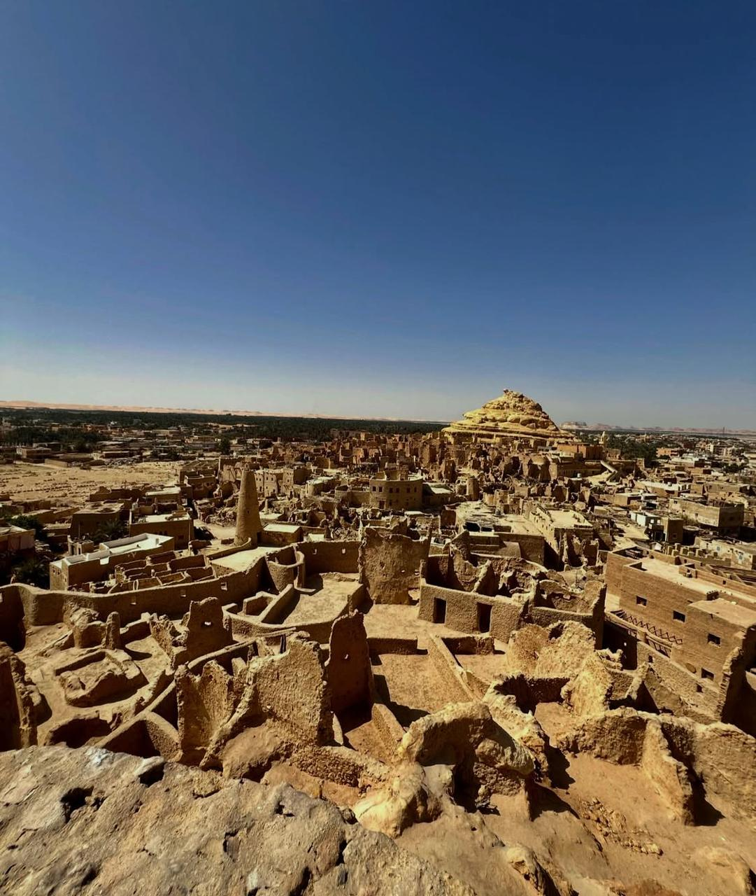

The enchanting oasis in the heart of the Western Desert
Siwa is one of the oldest oases in the world, inhabited by Amazigh (Berber) people for thousands of years. Alexander the Great visited it in 331 BC and consulted the oracle at the Temple of Amun, who confirmed to him that he was the son of the god Amun.!
It remained isolated for centuries due to the Great Sand Sea, and this preserved its culture, its Siwi (Berber) language, and its authentic customs to this day..
